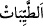

edilen bir husûsun dikkate almaya ve uygulamaya lâyık bilmeleri içindir. Yâni biz her
peygambere: “Temiz olan şeylerden ye ve güzel işler yap.” dedik. Peygamberlerle ilgili
bu müteaddid emirler, özet olarak aktarılırken kısaltma için çoğul siygasıyla ifâde
edilmiştir.
Bâzıları bu hitâbın, tâzim için bir kimseye çoğul lafzıyla hitâb etme şeklindeki
Araplar’ın âdeti üzere sadece Rasûlullah (s.a.)’e olduğunu söylemiştir. Burada O’nun
fazîleti ve onların kemâlâtına sâhip olma konusunda hepsinin yerine kâim olduğu beyan
edilmektedir.
Rahmân başkalarının âciz kaldığı şeyleri hep sende topladı
Güzellerde olan güzelliklerin hepsine tek başına sen sahipsin
“Temiz olan şeylerden yiyin;” “__WORD__ mübah yiyecekler ve meyvelerden hoş ve
lezzetli olan şeylerdir.
“Güzel işler yapın” yani sâlih amel işleyin. Sizden istenen ve Rabbiniz katında
faydalı olacak olan odur.
Bu emir, ilkinin aksine vücûb ifade eder.
Burada bazı ibâhacıların sözleri reddedilip ortadan kaldırılmaktadır. Onlar şöyle
derler: “Kul muhabbetin sonuna ulaştığında, kalbi arınınca ve nifak olmadan îmânı küfre
tercih edince zâhirdeki ibadetlerden salih ameller ondan düşer. Onun ibadeti
tefekkürden ibâret olur.” Bu söz ancak küfür ve sapıklıktır. Çünkü, muhabbet ve îman
konusunda insanların en kâmilleri peygamberlerdir. Özellikle de Habîbullah (s.a.)’dir.
Halbuki onlar hakkında sâlih ameller ve ibâdetlerle ilgili mükellefiyetler en tam ve
kâmil durumdadır.
“Ben sizin” zâhir ve bâtın amellerden “yaptıklarınızı hakkıyla bilmekteyim.” Ona
göre de size karşılık vereceğim.
Âyet râhiplerin güzel ve hoş şeyleri reddetmelerinin bâtıl olduğuna delâlet etmektedir.
Yâni onların inancına göre onların dininde temiz ve hoş şeyleri yemek yoktur.
Bilesin ki âyette sâlih amelin zikrinin te’hiri, onun helal yemenin neticesi olduğuna
delâlet etmektedir.
Mesnevî’de der ki:
Bilgi ve hikmet, helâl lokmadan doğar
Aşk ve incelik helâl lokmadan meydana çıkar
Bir lokmadan kıskançlık ve tuzak görürsen
Ondan bilgisizlik ve gaflet doğarsa, haram bil sen onu
Buğday ekince arpa biter mi hiç?
Eşek sıpası veren at gördün mü hiç?
Lokma tohumdur, düşünceler onun ürünü
Lokma denizdir, düşünceler onun incisi